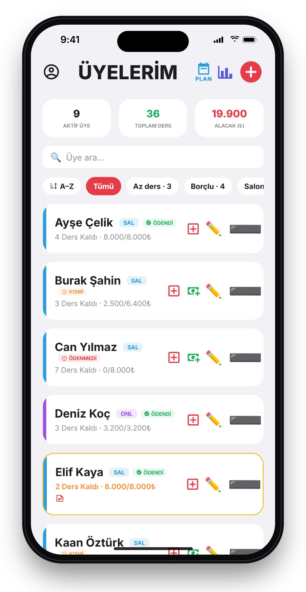
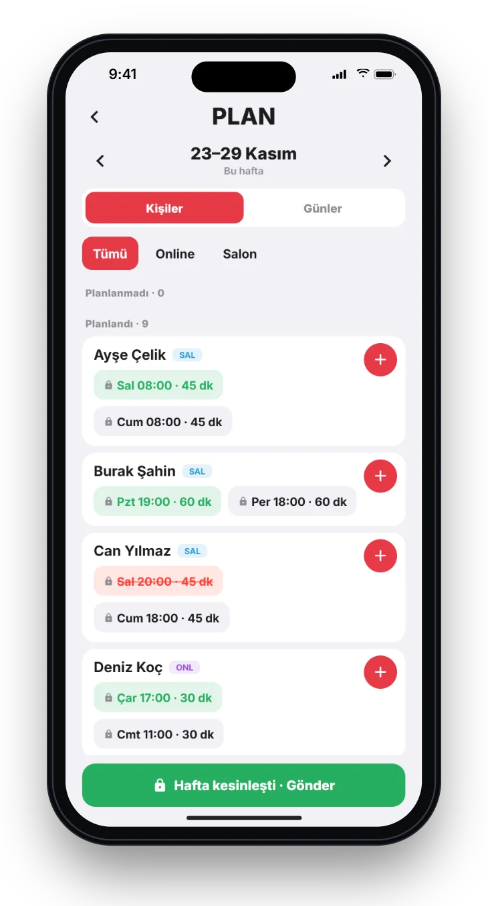
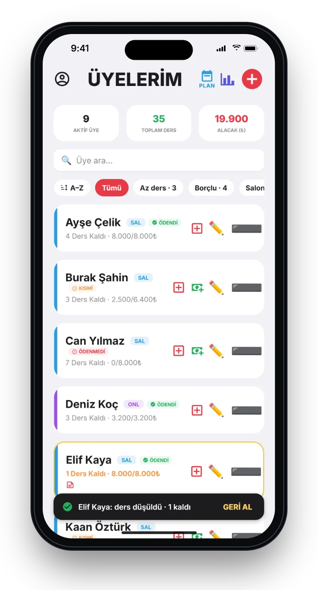
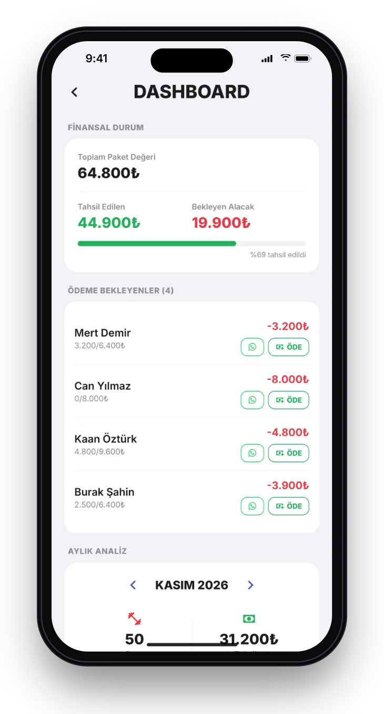
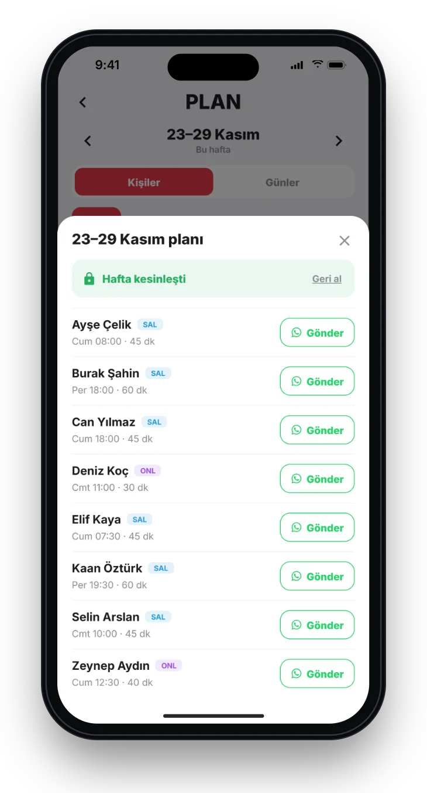
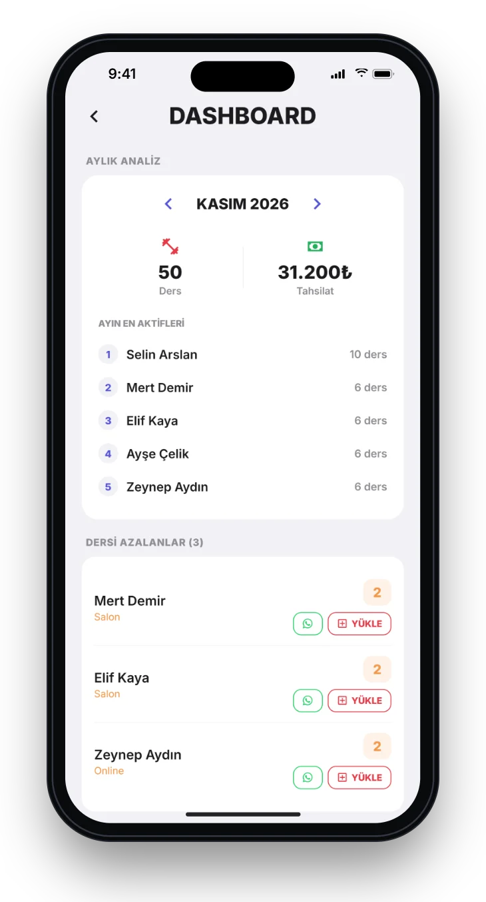

Haftalık Plan YENİ
Pazar akşamı haftanın programını üye isimlerine dokunarak birkaç dakikada kur, geçen haftayı tek dokunuşla kopyala. Son 24 saatte gelen iptal ve değişikliklerde dersi yakmak ya da affetmek senin elinde.
Kişisel antrenörler ve eğitmenler için
Kimin kaç dersi kaldı, kim ödemedi, bu hafta kim ne zaman geliyor? Hepsi tek ekranda; kağıt defter, Excel ve WhatsApp karmaşası olmadan.


Üye eklemek 10 saniye, ders düşmek tek dokunuş. Gerisini PT Track takip eder.
Pazar akşamı haftanın programını üye isimlerine dokunarak birkaç dakikada kur, geçen haftayı tek dokunuşla kopyala. Son 24 saatte gelen iptal ve değişikliklerde dersi yakmak ya da affetmek senin elinde.
Ders bitince bas, paketten düşsün. Dersi azalan üye sarı uyarıyla öne çıkar; yanlış bastıysan geri al.
Paket ücretini gir, taksitli ya da toplu ödeme al. Her üyenin durumu kartında görünür: ÖDENDİ, KISMİ ya da ÖDENMEDİ.
Ders ve ödeme hatırlatmasını ya da haftalık programı üyene hazır mesajla, tek dokunuşla gönder.
Toplam paket değeri, tahsilat, bekleyen alacak ve ayın en aktif üyeleri tek ekranda. Ay sonu raporunu PDF olarak paylaş.
Sakatlık geçmişini, özel durumları ve gelişim notlarını her üyenin kartında tut.
Salon ve online üyelerini ayrı takip et; listeyi ve haftalık planı tek dokunuşla filtrele.
Paketi biten üyeyi arşive al, yeni paket aldığında tek dokunuşla geri getir. Geçmiş kaybolmaz.
Görüntüler uygulamanın kendisinden alındı; isimler örnektir.





Paketle ders satan, birebir ya da grup ders veren herkes için.
Hayır. PT Track ücretsizdir ve içinde reklam yoktur.
Şu an yalnızca iPhone için var (iOS 15.1 ve üzeri).
Hayır. PT Track yalnızca antrenör içindir. Haftalık programı, ders ve ödeme hatırlatmalarını üyelerine WhatsApp'tan hazır mesajla gönderirsin.
Verilerin hesabına bağlı olarak Google Firebase altyapısında saklanır. Telefon değiştirdiğinde aynı hesapla giriş yapman yeterli. Ayrıntılar gizlilik politikasında.
Evet. Aynı hesapla giriş yaptığın her iPhone'da aynı kayıtları görürsün.
Uygulamada Profil ekranındaki Hesabı Sil seçeneği hesabını, üye kayıtlarını ve haftalık plan kayıtlarını kalıcı olarak siler.
omernacar.lab@gmail.com adresine yazabilirsin.
Ücretsiz. Hesap açıp ilk üyeni eklemek bir dakika sürer.